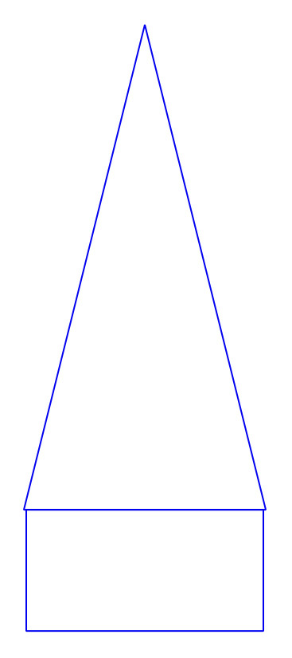

<div id="content-source">
    <div id="model-rockets">
        <h1 style="color: var(--content-text)">Model Rocketry Design and Construction</h1>
        <p>This page contains reference information, diagrams, and how-to videos for the various parts of model rocket creation and flight. To learn more about a specific topic, click on the links in the Table of Contents below:</p>
        <h2>Table of Contents</h2> 
        <ol>
            <li><a href="#about-rockets">About Model Rockets</a></li>
            <li><a href="#rocket-flight">Flight of a Model Rocket</a></li>
            <li>
                <h4>Parts of a Model Rocket</h4>
                <div id="rocket-parts" class="content-container">
                    <div class="content-left">
                        <ol>
                            <li><a href="#nose-cone">Nose Cone</a></li>
                            <li><a href="#payload-section">Payload Section</a></li>
                            <li><a href="#nose-block">Nose Block</a></li>
                            <li><a href="#recovery-systems">Parachute, shroud lines, Shock Cord, and Mount</a></li>
                            <li><a href="#body-tube">Body Tube</a></li>
                            <li><a href="#transition">Transition</a></li>
                            <li><a href="#fins">Fins</a></li>
                            <li><a href="#coupler">Coupler</a></li>
                            <li><a href="#launch-lug">Launch Lug</a></li>
                            <li><a href="#motor-mount">Engine Mount or Motor Mount</a></li>
                            <li><a href="#rocket-motors">Motor</a></li>
                        </ol>
                    </div>
                    <div class="content-right">
                        
                    </div>
                </div>
            </li>
            <li><a href="#aerodynamics">Aerodynamics and Stability</a></li>
            <li><a href="#rocket-motors">Rocket Motors</a></li>
        </ol>
        <div id="about-rockets">
            <h3>About Model Rockets</h3>
            <p>A model rocket is a small, powered replica designed for safe and controlled flight, typically used as a hobby or educational tool. Made from lightweight materials such as plastic, cardboard, or balsa wood, it is equipped with a solid rocket motor that generates thrust to propel it into the sky. Model rockets are guided by aerodynamic fins and often include a parachute or streamer for recovery after their flight.        
        </div>
        <div id="rocket-flight">
            <h3>Flight of a model rocket</h3>
            <div class="content-container">
                <div class="content-left">
                    <p>The flight path of a model rocket begins with the <strong>powered flight phase</strong>, during which the rocket motor ignites and produces thrust to propel the rocket skyward. This phase is characterized by rapid acceleration as the motor's fuel burns, generating enough force to overcome gravity and air resistance. Once the motor's fuel is depleted, <strong>burnout</strong> occurs. At this point, the thrust ceases, but the rocket continues to ascend due to the momentum it gained during powered flight.</p>

                    <p>Following burnout is the <strong>coasting phase</strong>, where the rocket climbs purely under its remaining kinetic energy. This phase ends at the <strong>apogee</strong>, the highest point of the rocket's flight path. At apogee, a <strong>recovery device</strong>, such as a parachute or streamer, is ejected—usually triggered by a small ejection charge in the rocket motor. The recovery device ensures a safe and controlled descent by slowing the rocket's fall, minimizing the risk of damage upon landing and making it easier to retrieve. This sequence creates a smooth and predictable flight path, which is a hallmark of safe and successful model rocket launches.</p>
                </div>
                <div class="content-right">
                    
                </div>
            </div>
        </div>
        <h2>Parts of a Model Rocket</h2>
        <div id="nose-cone">
            <h3>Nose Cones</h3>
            <p>
            The nose cone is the front of the rocket and has a shape that causes the air to flow smoothly around it. The nose cone could be conical in shape, but at subsonic speeds a rounded shape gives lower aerodynamic drag. The nose cone is typically made from plastic, balsa wood, hardwood, fiberglass, or styrofoam. At AHS, we typically print custom nose cones from PLA or PETG. The nose cone has two parts:
            </p>
            <ul>
                <li>Nose: the aerodynamic part that sticks out of the body tube.</li>
                <li>Shoulder: the part that sticks into the body tube and holds it there.</li>
            </ul>
            <p>
                The shape of the nose can vary widely, leading to different aerodynamic profiles. At subsonic speeds a rounded shape gives lower aerodynamic drag. The available nose shapes are in the table below. Click on them to learn more about each nose type.
            </p>
            <div style="display: flex; justify-content: center;"> 
                <table style="margin: 10px; width: 425px;" id="nose-table">
                <tr>
                    <td>
                    <a href="#conical"></a>
                    </td>
                    <td>
                    <a href="#ogive"></a>
                    </td>
                    <td>
                    <a href="#ellipsoid"></a>
                    </td>
                </tr>
                <tr>
                    <td>
                    <a href="#conical"><h4>Conical</h4></a>
                    </td>
                    <td>
                    <a href="#ogive"><h4>Ogive</h4></a>
                    </td>
                    <td>
                    <a href="#ellipsoid"><h4>Ellipsoid</h4></a>
                    </td>
                </tr>
                <tr>
                    <td>
                    <a href="#power"></a>
                    </td>
                    <td>
                    <a href="#parabolic"></a>
                    </td>
                    <td>
                    <a href="#haack"></a>
                    </td>
                </tr>
                <tr>
                    <td>
                    <a href="#power"><h4>Power Series</h4></a>
                    </td>
                    <td>
                    <a href="#parabolic"><h4>Parabolic</h4></a>
                    </td>
                    <td>
                    <a href="#haack"><h4>Haack Series</h4></a>
                    </td>
                </tr>
                </table>
            </div>
            <p>
                The nose must always be free to slide forward and come off. Therefore,
                the back end of the nose is cut down to form an internal shoulder which
                will slide inside the body tube and hold the nose in place. The base
                diameter of the nose should match the <em>outside</em> diameter of the
                body tube, while the diameter of the shoulder should match the
                <em>inner</em> diameter of the body tube so that it will slip-fit inside
                the tube. It's better to have the shoulder a little loose because you
                can always build it up by wrapping tape around the shoulder. If it's too
                large, then you'll need to sand the shoulder down. A rule of thumb for
                testing the looseness of the shoulder is that it should pull easily from
                the body tube but shouldn't rattle if you shake the body tube.<br /><br />
                The nose must be made of plastic or balsa wood, but never metal. Nor
                should a metal pin or nail be attached to the tip as it could turn a
                malfunctioning rocket into a missile or lawn dart. Besides, rounded nose
                tips perform better than pointed ones.<br /><br />
                Several commercial noses are available, and it can be very simple to
                select a predesigned nose and move on.<br><br>Designing one's own nose cone is a lot of fun and one of the
                key ways to customize a rocket. It is also one of the key components of
                a rocket's stability and aerodynamics. It is therefore
                <strong><em>very</em></strong> important that fabricated model matches
                the computer design.
            </p>
        </div>
        <div id="payload-section">
            <h3>Payload Section</h3>
            <p>Not all rockets have a payload section. The example rocket shown has a clear plastic payload section that allows any payload inside to be easily inspected visually. The payload section can be used to carry a variety of payloads, such as electronic altimeters, eggs, flight computers, or cameras.</p>
        </div>
        <div id="nose-block">
            <h3>Nose Block</h3>
            <p>The nose block is used to seal off the payload section from the motor ejection charge to protect its contents. The nose block can be a 3D printed transition (see transitons below), a polystyrene plug as shown in the example image, or a plywood wall cut to fit the bottom of the payload section. As shown in the example image, If a nose block is used, the shock cord (see below) will attach to the nose block, transition, or bulkhead instad of the nose cone. Care must be taken to ensure now that the nose cone, the payload section body tube, and the nose block are attached properly so as to stay as a unit. One side of the payload section, either the nose cone or the nose block, is typically fixed permanently to the payload section body tube, while the other end is attached via removable rivets to allow access to the inside of the payload section.</p>
        </div>
        <div id="recovery-systems">
            <h3>Parachutes, Streamers, Shock Cords, & Recovery Mounting</h3>
            <p>All model rockets require a recovery system to slow their descent and return them safely to the ground. The most common type of recovery system is the parachute. The parachute may be made from thin plastic or cloth. The parachute is expelled from the body tube by the ejection charge of the rocket motor after a delay to allow the rocket to reach apogee and be traveling at a relatively slow speed. Parachutes come in the following diameters:</p>
            <ol>
                <li>6 inches</li>
                <li>9 inches</li>
                <li>12 inches</li>
                <li>15 inches</li>
                <li>18 inches</li>
                <li>24 inches</li>
            </ol> 
            <p>Other recovery systems include streamer, featherweight, glide, helicopter, body drag, and tumble. Streamers are long, ribbon-like strips that flutter in the air, creating enough drag to reduce descent speed while remaining compact and easy to pack. Streamers are often used for smaller rockets or launches in tight areas where a parachute may drift too far.</p>
            <div class="content-container">
                <div class="content-left">
                    <p>The shock cord holds the parts of the rocket together after they separate at ejection. The shock cord may be made of an elastic material to help absorb the shock of the separating parts coming to a halt at the ends of the cord, or it could be made from a non-elastic line (in which case it is normally longer). Typical materials for shock cards are sewing elastic, rubber, nylon, and Kevlar. At AHS, we use kevlar inside the rocket because it can withstand the heat of the ejection charge, and a sewing elastic outside of the rocket.</p>
                </div>
                <div class="content-right">
                    
                </div>
            </div>
        <div id="body-tube">
            <h3>Body Tubes in OpenRocket</h3>
            <p>The body tube (or tubes) are the airframe of the model rocket. Body tubes are typically made from paper, fiberglass, or plastic, with the spiral-wound paper tube being the most common. The rocket may have multiple body sections connected with transition sections (if the tubes are different diameters) or nose blocks or couplers (if the tubes are the same diameter). The body tube usually contains an engine mount to hold the motor, and space for the recovery system.<br /><br />The standard available body tubes are given
            below with their inner and outer diameters.
            </p>
            <div id="body-tube-table" style="display: flex; justify-content: center;">
                <table>
                    <thead>
                    <tr>
                        <th><h4>Tube Size</h4></th>
                        <th><h4>Outer diameter (mm)</h4></th>
                        <th><h4>Inner Diameter (mm)</h4></th>
                        <th><h4>Notes</h4></th>
                    </tr>
                    </thead>
                    <tbody>
                    <tr>
                        <td>BT20</td>
                        <td>18.7</td>
                        <td>18.0</td>
                        <td>Same size as motor tubes for 18mm motors.</td>
                    </tr>
                    <tr>
                        <td>BT50</td>
                        <td>24.8</td>
                        <td>24.1</td>
                        <td>Same size as motor tubes for 24mm motors.</td>
                    </tr>
                    <tr>
                        <td>BT55</td>
                        <td>33.7</td>
                        <td>32.6</td>
                        <td>Minimum size for 29mm motors</td>
                    </tr>
                    <tr>
                        <td>BT60</td>
                        <td>41.6</td>
                        <td>40.5</td>
                        <td>Minimum size for clusters</td>
                    </tr>
                    <tr>
                        <td>BT70</td>
                        <td>56.3</td>
                        <td>55.2</td>
                        <td></td>
                    </tr>
                    <tr>
                        <td>BT80</td>
                        <td>66.0</td>
                        <td>65.0</td>
                        <td></td>
                    </tr>
                    </tbody>
                </table>
            </div>
        </div>
        <div id="transition">
            <h3>Transition</h3>
            <p>A transition section is used to connect body tubes of different diameters. Not all rocket designs incorporate a transition. The transition could be used to either increase or decrease the rocket's diameter at that point. Transition sections are typically made from plastic, balsa wood, hardwood, fiberglass, or paper. They may be either hollow or solid. In the model shown, the bottom of the transition is where the rocket separates when the parachute is elected.</p>
        </div>
        <div id="fins">
            <h3>Fins</h3>
            <p>The fins of the rocket provide aerodynamic stability in flight so that the rocket will fly straight (in the same way that the feathers of an arrow help it fly straight). The fins are typically made from plastic, balsa wood, plywood, cardboard, or fiberglass. A rocket three or four fins, but may have more. Some rockets don't have any fins and may rely upon a cone or other surfaces to stabilize the model in flight. On larger rockets, the fins may be mounted through slots in the body tube for extra strength.</p>
        </div>
        <div id="coupler">
            <h3>Coupler</h3>
            <p>A coupler is a short section of tube, similar in make to a regular body tube, except that it's sized to fit inside of a body tube. This allows the joining of multiple body tubes to make a rocket longer than the stock length of a purchased body tube. For instance, most purchased body tubes are 18" long. IF you want to make a rocket with a longer body tube, you'll need to use couplers to glue them together.</p>
        </div>
        <div id="launch-lug">
            <h3>Launch Lug</h3>
            <p>When a model rocket first begins to lift off, it is traveling too slowly for the fins to provide aerodynamic guidance, so the rocket must be guided for the first few feet by a launch rod or rail. The launch lug is what allows the model rocket to slide along the rod. On a model rocket, the launch lug is typically a small diameter tube. Larger rockets may use rail buttons on the side of the rocket to allow it to slide along a much stiffer launch rail for initial guidance.</p>
        </div>
        <div id="motor-mount">
            <h3>Motor Mounts</h3>
            <p>
                The motor mount is the special assembly at the bottom of the rocket that holds the motor. It has two essential functions:</p>
            <ul>
                <li>Ensure the motor doesn't slide forward while firing or falling out during ejection charge.</li>
                <li>Center the motor inside the rocket body tube.</li>
            </ul>
            <div class ="content-container">
                <div class = "content-left">
                    <p>The main components of a motor mount include the motor tube (1), centering rings (2), engine clip (3), and a motor block (4). The motor tube houses the rocket motor, while centering rings keep the mount aligned within the rocket body. An engine clip secures the motor in place, preventing it from being ejected during operation, and the thrust ring ensures the motor doesn't slide forward under the pressure of ignition. Larger rocket motors have a thrust ring on the bottom of the motor around the nozzle, making the motor block unnecessary.
                    </p>
                </div>
                <div class="content-right">
                    
                </div>
            </div>
        </div>
        
        <div id="rocket-motors">
            <h3>Rocket Motors</h3>
                <div class = "content-left">
                    <p>The engine, or motor, of the model rocket is a commercially manufactured solid-propellant rocket motor that is good for one flight. Model rocket motors are typically made from thick wound paper tubes. The motor contains a ceramic nozzle, a solid propellant grain (chemically similar to black powder, but compressed into a solid piece), a slow-burning delay element, and a loose-grained ejection charge that is retained by a clay cap. Larger rockets may use motors with plastic casings and ammonium perchlorate composite propellant. Some motors use metal casings that can be reloaded with commercially manufactured APCP grains.</p>
                </div>
                <div class="content-right">
                    
                    
                </div>
            <p></p>
        </div>
    </div>
</div>
